Costanzo · proposta dalla foto
Volto e stile originali, capelli rivisti, completo petrolio, papillon e spilla. Tre forme proposte; non sono applicate al gioco attivo.
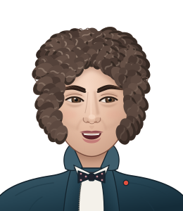
Er PoliticoForma 1 · livello 5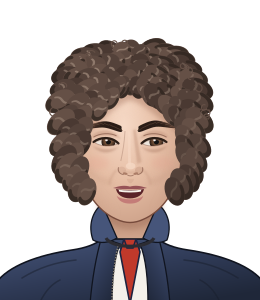
L’OnorevoleForma 2 · livello 14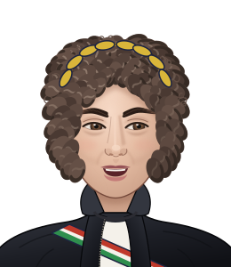
Er PresidenteForma 3 · livello 26Le tre forme dei sei personaggi attuali
Questi sono riferimenti esportati dal gioco esistente, non nuovi redesign approvati. Apri un personaggio per vedere le sue tre forme.
Antonio
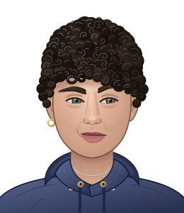
Crazy shitForma 1 · livello 5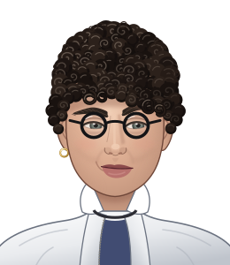
Il RicercatoreForma 2 · livello 14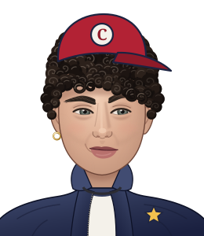
Stato dell’ArteForma 3 · livello 26Costanzo
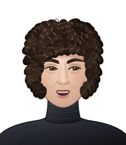
Er PoliticoForma 1 · livello 5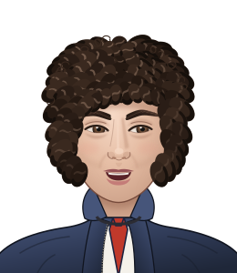
L’OnorevoleForma 2 · livello 14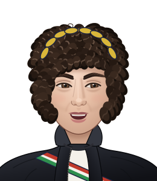
Er PresidenteForma 3 · livello 26Andrea
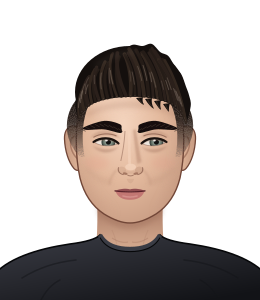
Volpino AlatoForma 1 · livello 5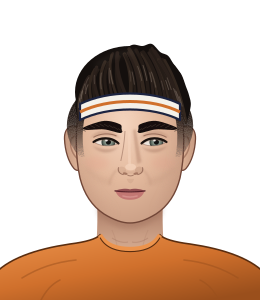
Il VolpinoForma 2 · livello 14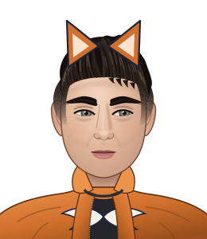
Il Volpino AlatoForma 3 · livello 26Valentin
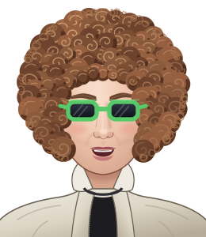
L’Animale AnomaloForma 1 · livello 5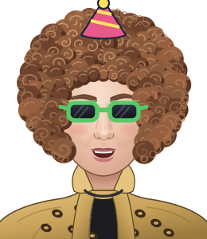
L’AnimaleForma 2 · livello 14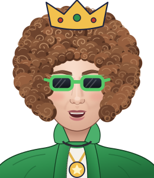
Il King del VerdeForma 3 · livello 26Forchetta
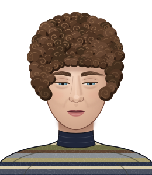
ForchettaForma 1 · livello 5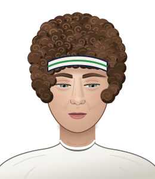
Forchetta da TorneoForma 2 · livello 14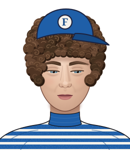
Il Più FormianoForma 3 · livello 26Zendavid
ZendavidForma 1 · livello 5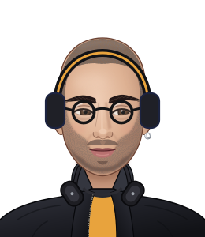
DJ ZendavidForma 2 · livello 14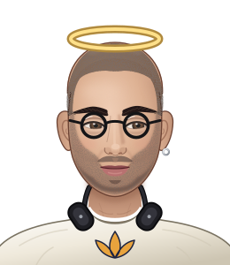
Il Maestro ZenForma 3 · livello 26 Claudia / Costanzo / Valentin · esperimento narrativo
Anteprima conservata del prototipo: scena facoltativa con scelte persistenti. Claudia ha soltanto un primo sprite provvisorio; il suo design completo è ancora da costruire.
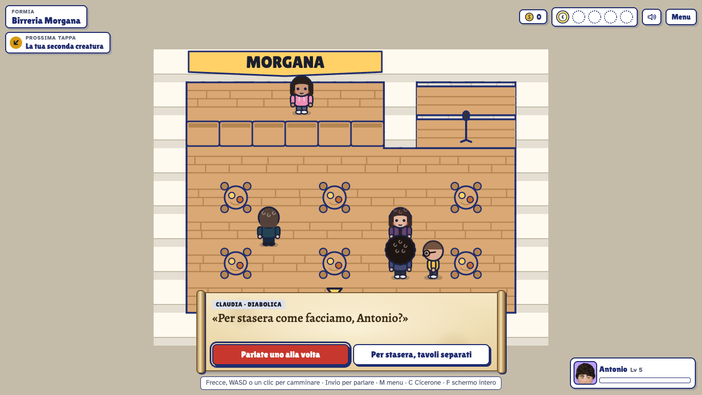